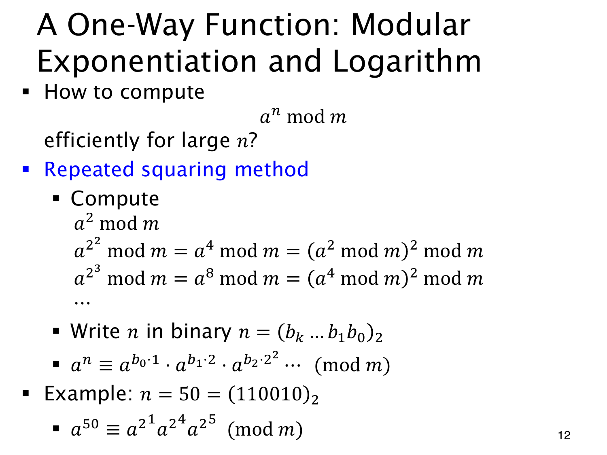

L1.14 · 第 12 页讲解原文
查看这一页课件

指数 50 只需选出三个二进制位置
50=(110010)2=32+16+2，所以
a50≡a32a16a2(modm).
先从 amodm 开始，连续平方并取模，依次得到 a2,a4,a8,a16,a32 的余数。算到 a32 只需五次平方，再组合上面三项，无需做约五十次连续乘法。
这就是 repeated squaring（重复平方）。每一步只保存小于 m 的余数，乘的过程中也不断取模，不必构造完整的大幂。
一般将 n 写成二进制 n=∑ibi2i，bi∈{0,1}，就有
an≡i:bi=1∏a2i(modm).
只选二进制位为 1 的项。所需模乘次数为 O(logn)，因此正向模幂计算相对于指数位数很高效。标题提到“单向函数”，但这一页只说明容易算的一面，没有证明逆向问题一定困难。